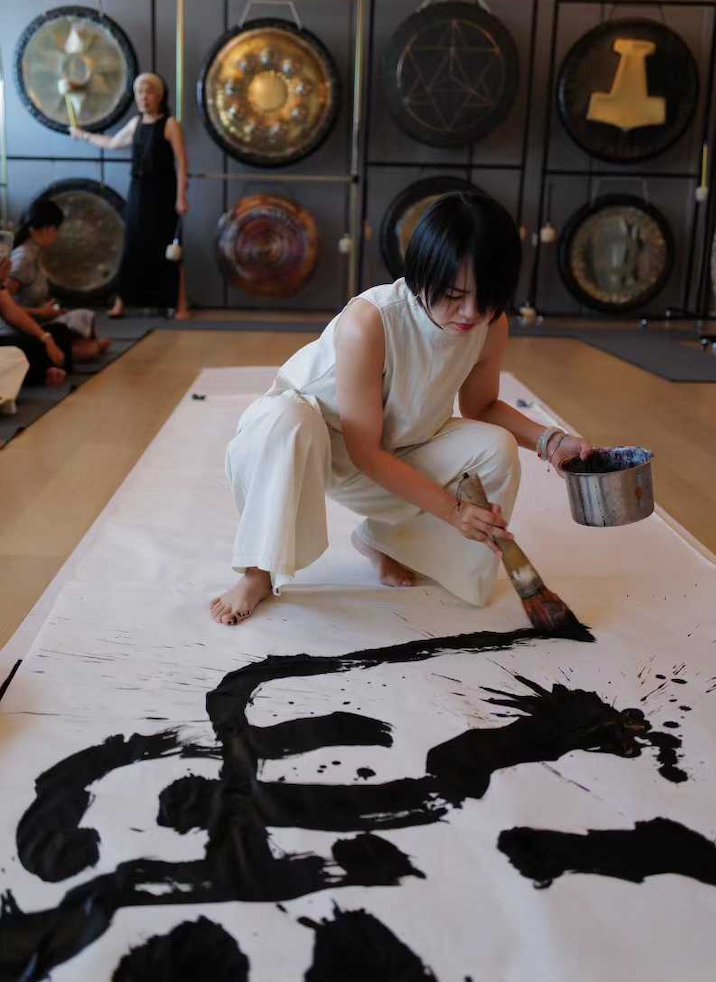

JOEYLU

甲乙 · 书法 / Calligrapher
Joey LU, a Fudan University alumna and a romantic calligraphy artist of the post-90s generation, began her journey with the brush at the tender age of four. Today, her masterpieces grace museum collections and have earned her prestigious accolades both at home and abroad. Dedicated to fostering cultural dialogue, she has traveled extensively for artistic exchanges in Japan, Thailand, Singapore, and beyond. Deeply anchored in classical calligraphy, her creations breathe new life into tradition through bold colors and modern innovation, striking a masterful, self-consistent harmony between ancient and contemporary, Eastern and Western aesthetic paradigms.
复旦毕业的90后浪漫主义书法艺术家。4岁习书，作品入藏博物馆并多次荣获国内外奖项。曾赴日本、泰国、新加坡等地进行艺术交流。她的作品植根于传统书法，在此基础上融入色彩和创新，在古今中西审美体系中得到自治的平衡。
- Sep 2022 Yangpu Riverfront, Shanghai — “The Architect of Your Own Life” Solo Exhibition
- May 2023 Maple, Beijing — “To Walk the Earth and See the Sun” Solo Exhibition
- Jun 2024 Heping Academy, Shanghai — “A Life in Brushstrokes” Pop-up Solo Exhibition
- Sep 2024 Yoyogi Park, Tokyo — “2024 China Festival” cultural exchange, by invitation of the Consulate-General of China in Japan
- Aug 2025 Ziqi Dongfang Gallery, Shanghai — “Dreams” Solo Exhibition
- 2022.09 上海杨浦滨江，“你是生活的甲方”个展
- 2023.05 北京maple，“人间一趟看看太阳”个展
- 2024.06 上海和平书院，“字里人生”快闪个展
- 2024.09 日本东京代代木公园，受中国驻日总领事馆邀请出席“2024中国节”文化交流
- 2025.08 上海字启东方画廊，“戏梦”个展
- 2026.03 作品参展上海展览中心